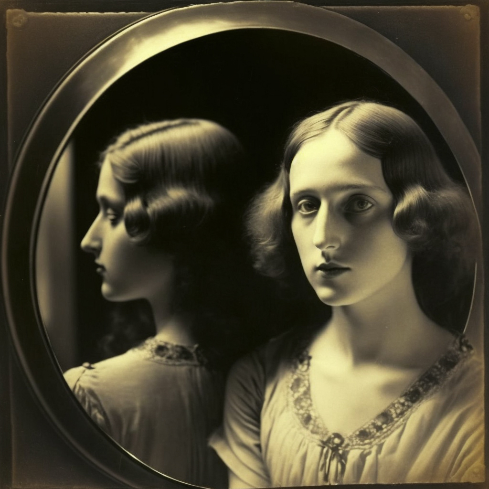
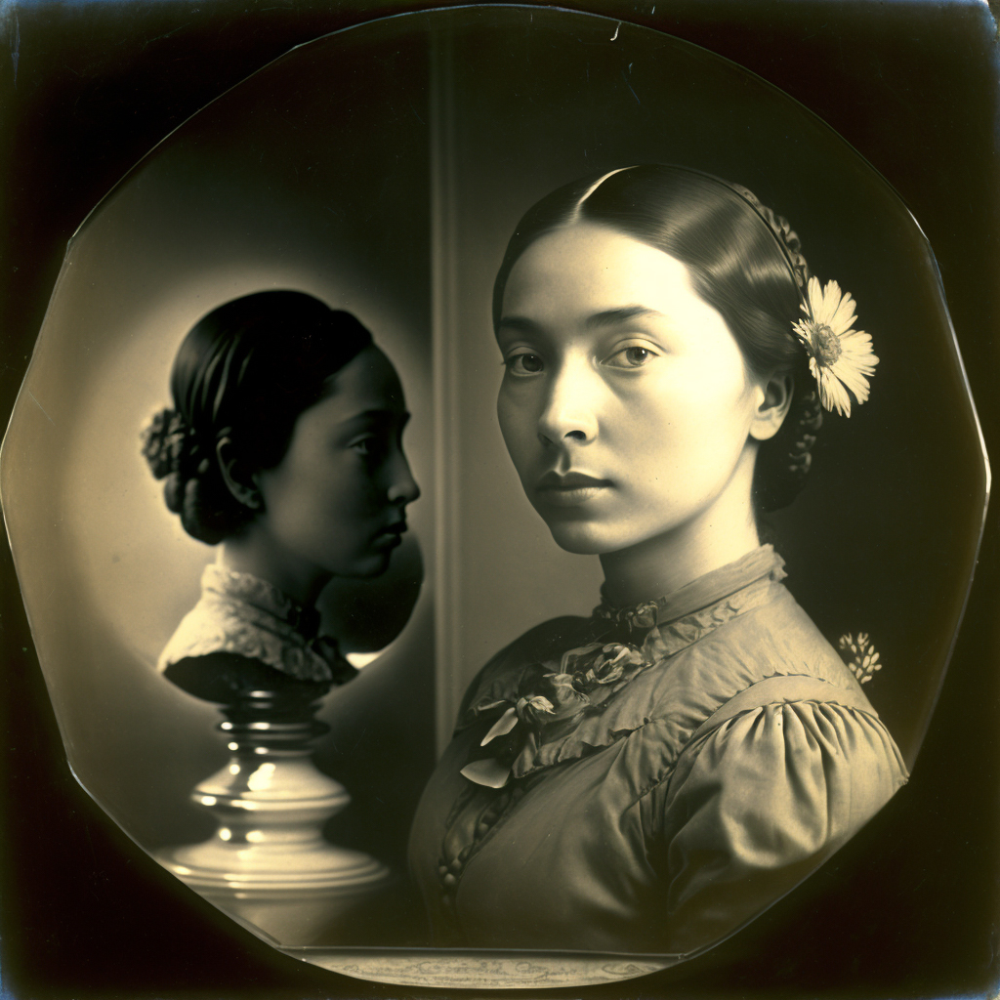
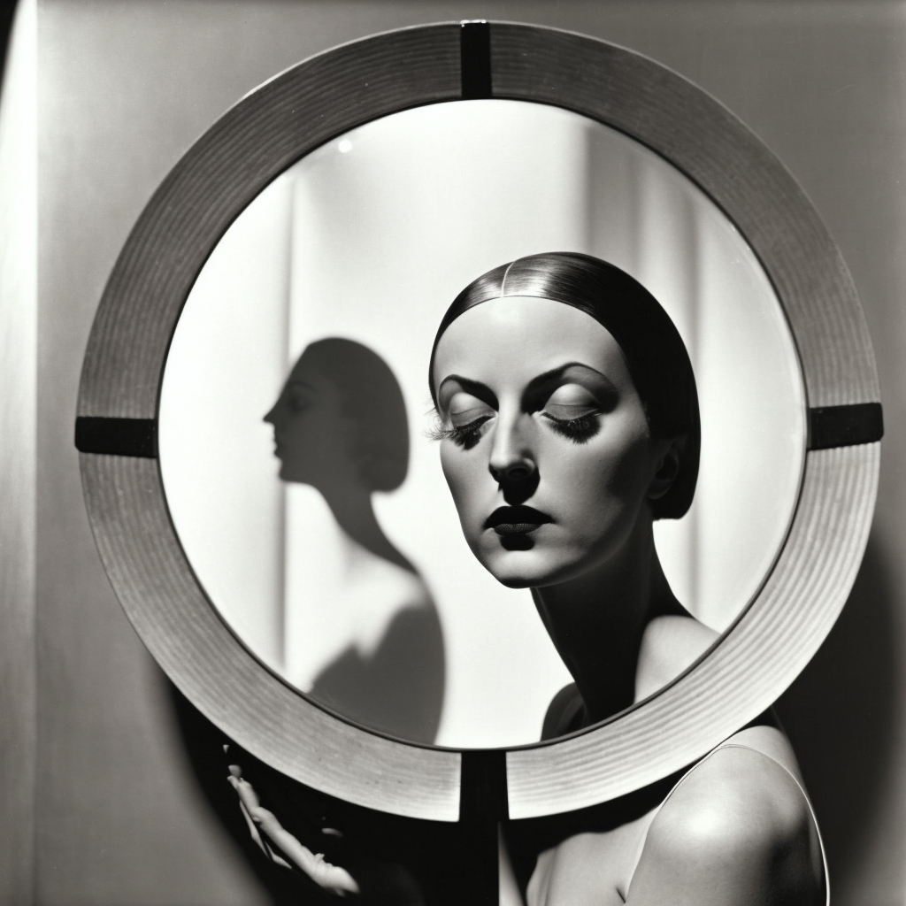
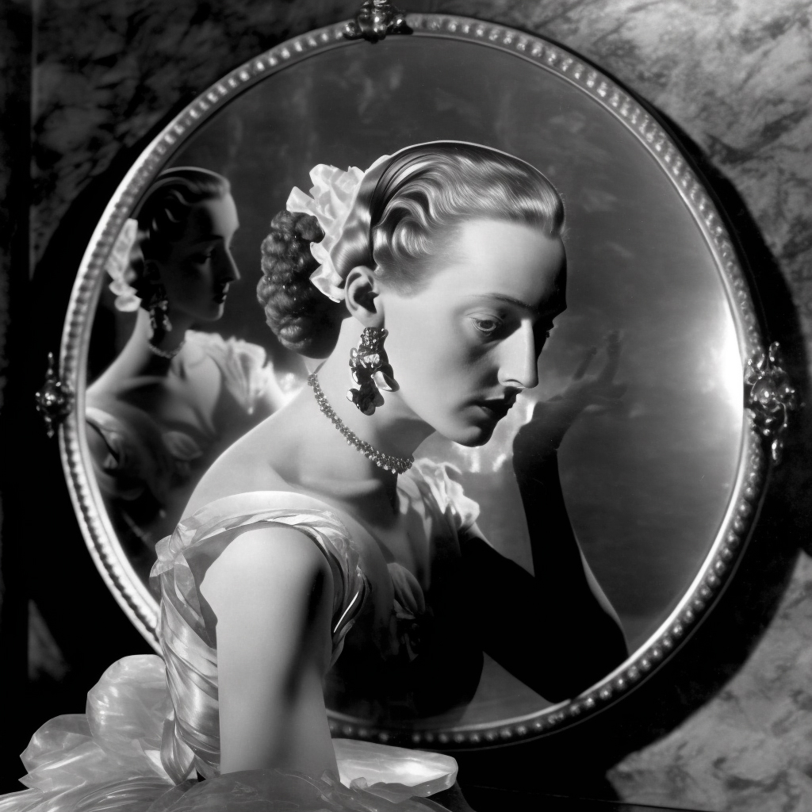
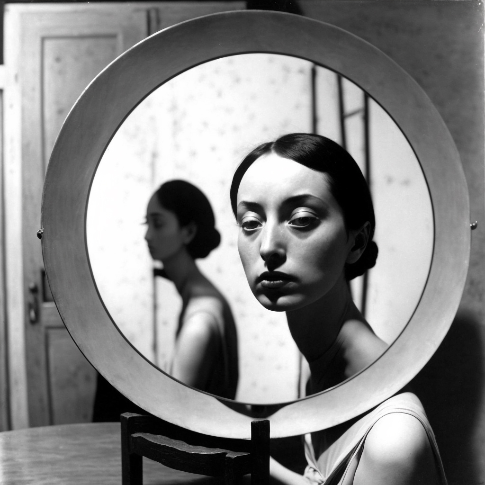
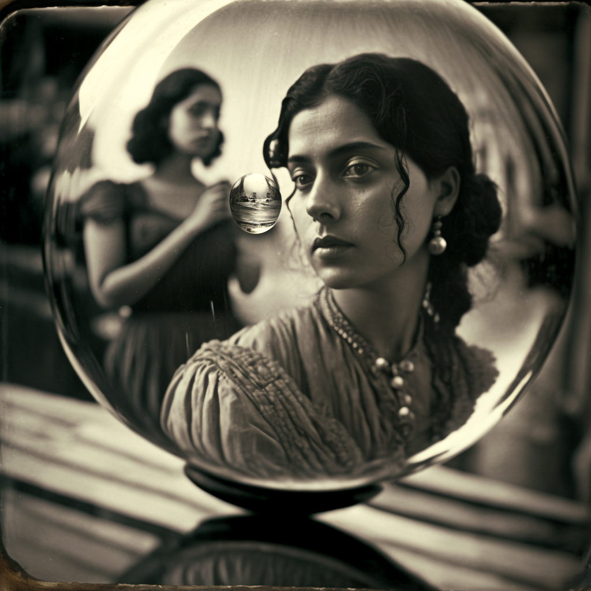

Arqueología Imaginaria presents:
œuvre enchaînée
History of a photographic game
initiated by Man Ray and Lee Miller*
A fortuitous beginning
In December 1930, in a Paris café, Man Ray and Lee Miller were looking through a packet of old photographs that Francis Picabia had just sent them from Uruguay. Two of them caught their attention. The first shows an elegant young woman leaning against a mirror, which reflects her image from another point of view. In the second, a young woman with mixed-race features poses in front of what looks like a bust carved in wood. Both artists speculate on the diverse nature of the image: captured, reflected, represented? They also speculate on its superficial and ambiguous character.
 At one point in the conversation, Miller questions whether the image in the mirror is really the reflection of the young woman looking into the camera: neither the hairstyle nor the reflection of the shoulder match. Is it not rather a portrait, taken at another time and composed to look like a mirror? If so, why the artifice? Ray suggests that what looks like a bust in the second image may well be a photomontage or other laboratory trick.
First portrait
Both possibilities excited their creative minds and they decided to create an image that was equally complex and suggestive, at once demanding and elusive of interpretation. After several unsatisfactory attempts, they finally succeeded in the Triple Portrait of Olga Ivanovna, which they both signed and published in the August 1931 issue of the French edition of Harper's Bazaar.
The game begins
The well-known penchant of Surrealists and Dadaists for including play in creative processes was about to see a new addition: the œuvre enchaînée. Practically all the couple's artist friends, and they were not few in number, received copies of the Triple portrait... with an invitation to version the work and a long series of indications and considerations on the artistic image.
Surprisingly (or not so surprisingly), the first to accept the invitation was not anyone from the Dadaist circle, but the aristocratic Cecil Beaton. He decided to interpret the image in a very free manner, but took advantage of the occasion to incorporate some studio tricks such as double projection and masking.
Some additions
Fernand Léger responded with an almost literal copy of the image received (possibly more interested in the technical procedure than in reflecting on the image), and Jean Cocteau composed a pair of magnificent portraits of the actor Denis Leclerc and a text (unfortunately lost) on the myth of Narcissus. Italia Stepanova contributed one of her ethereal self-portraits, and no one else is known to have decided to take part in the game.
By mutual agreement, an edition of 25 prints in 20x20 cm. of the five photographs was launched, presented in a beautiful box, which included an explanatory text titled ... or how to avoid showing the camera when photographing a mirror.

The game is not over
Although at the time this practical reflection on image and representation did not have the imagined impact, the fact is that over time it has become a theme that other artists have revisited, joining in a game to which they were not invited at the time.
Sergei Eisenstein mentioned the "Triple Portrait..." as inspiration for his "Spherical Portrait of Maria and Asuncion Morales"; Pablo Picasso attempted in the early 1960s another near-literal copy of the original image (though he was never proud of the result); a portrait attributed, not without controversy, to Richard Avedon is so faithful to the subject that it even copies the frame of the original 'mirror'; and is it entirely impossible that the elusive Vivian Maier was aware of at least the original photo published in Harper's Bazaar?
And to this day...
As Isabel Méndez Tapia notes in Avangarde and Game: "Lee Miller and Man Ray not only succeed in establishing a theme in the classical manner. They also, bridging the obvious gap, create a precursor to viral challenges a hundred years before viral challenges". And although the initial intention of the game was more ambitious (to initiate a collective aesthetic reflection), the idea of prolonging the game over almost a century would undoubtedly have been to the couple's liking.
*Disclaimer
As followers of the project already know, Arqueología Imaginaria is a work of art fiction. Although it imitates the modes of the popular essay, it is anything but. All the images have been generated by artificial intelligences and, although they try to approximate the themes and styles of their supposed authors, they are not based on any specific work. The references to persons or institutions of relevance in the artistic sphere are mostly invented, although an attempt is made to maintain a certain degree of verisimilitude. The texts quoted, their authors and the titles of the works to which they belong may be non-existent.
More information on the project can be found at Arqueología Imaginaria - Reimaginando la Historia del Arte con ayuda de la Inteligencia Artificial